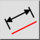
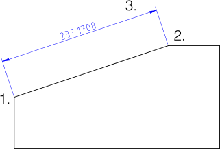

Selaras
Bilah Alat / Ikon:


Menu: Dimensi > Selaras
Pintasan: D, A
Perintah: dimaligned | da
Bilah Alat / Ikon:


Membuat dimensi sejajar. Dimensi sejajar biasanya mengukur panjang garis yang sudah ada. Garis dimensi selalu paralel dengan garis antara dua titik yang dipilih 1. dan 2.:
